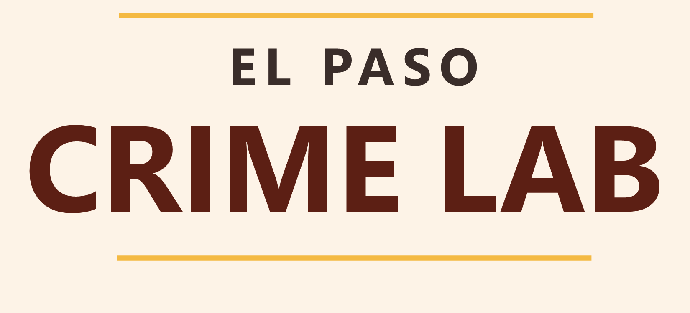

El Paso Crime Lab

Evidence. Research. Public Safety.
Independent research on crime and public safety in the borderland.
Our Mission
The El Paso Crime Lab is an independent research organization focused on crime and public safety in the El Paso region. We produce evidence-based research that increases community capacity to diagnose, understand, and respond to criminal justice-related issues.
What We Do
01
Research
Conduct independent research examining crime, public safety, and criminal justice issues affecting the El Paso region.
02
Local Data
Build accessible tools and dashboards that help communities monitor local problems and understand what the data show.
03
Community Resources
Connect residents and families with organizations and services available throughout the El Paso community.
Current Research
Understanding impaired driving in El Paso
Our current research examines alcohol-impaired driving using local crash data, research evidence, and community information. Explore the dashboard, reports, studies, and local reporting.
Local problems require local evidence.
We focus on producing research that can be understood and used by the communities it describes.
Stay Connected
Follow our work, receive updates about new research, or get in touch.